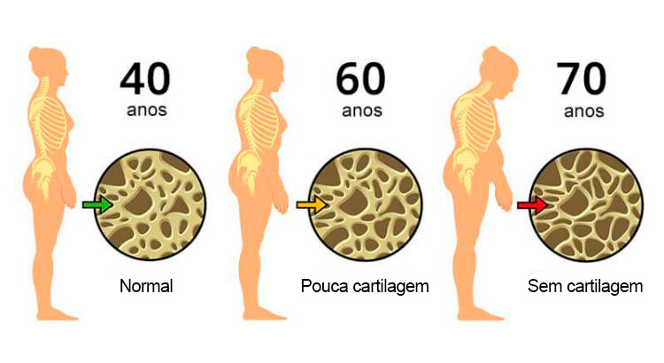
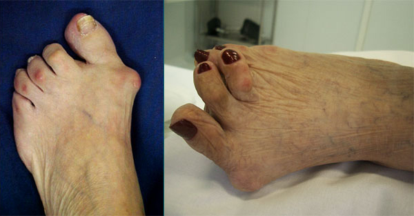
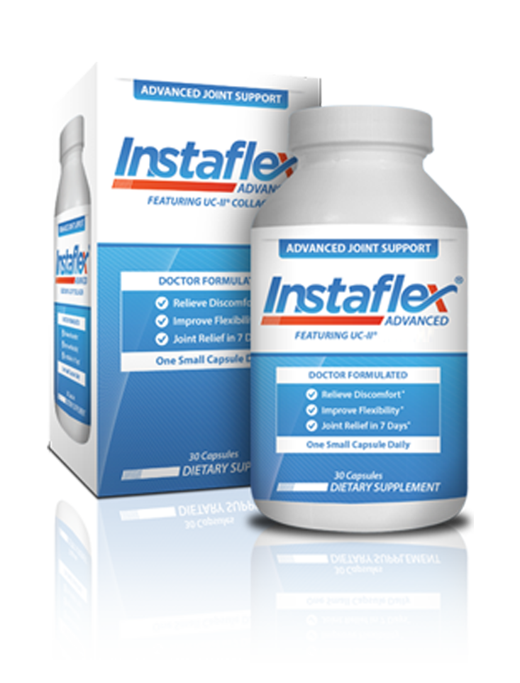

Dores nas articulações afetam profundamente a vida das pessoas, mas segundo o Dr. Drauzio Varella isso pode ser solucionado de uma forma extremamente simples!
Veja a reportagem que foi ao ar no último domingo no Fantástico:
"Tenho muitos anos de experiência e posso garantir que a maior parte dos problemas articulares e até ósseos são causados por falta de colágeno e não por problemas relacionados ao cálcio ou magnésio, como a maior parte das pessoas acredita."
Quando o assunto é relacionado aos ossos quais são as principais reclamações dos pacientes Dr. Drauzio?
"Na grande maioria dos casos as reclamações são de dores nas articulações, que vão de leves e moderadas até dores realmente incapacitantes. Muitos destes pacientes ficam anos em busca de uma solução para suas dores, que só pioram, sem encontrar algo como o Suplemento InstaFlex.
Geralmente tentam sem sucesso fazer uso de substâncias como a condroitina e a glucosamina, mas o que se mostra realmente eficaz é fazer a reposição de colágeno."

"Em muitos casos podemos ver uma clara degeneração das estrturas articulares por falta de colágeno, sem este o cálcio e outros elementos não tem como se ligar aos ossos, assim tornando o problema cada vez mais grave."
É bem comum ver atrofias como as da Dona Cida, a parte boa é que esses problemas são totalmente reversíveis com tratamento de colágeno tipo 2.
Acima a imagem do pé da Dona Cida Pereira, que participou da matéria e que não tratou seus problemas articulares.
Qualquer tipo de Colágeno vai Ajudar? Pode falar-nos um pouco mais disso?
"Na verdade não é qualquer tipo de colágeno que serve, se fosse assim seria muito fácil resolver o problema, a rande questão é que necessitamos fazer a reposição com o colágeno do tipo certo e nas proporções adequadas para de fato regenerar os tecidos das articulações e por fim eliminar as dores.

O colágeno que precisamos para eliminar de vez as dores nas articulações é chamado de Colágeno
Tipo 2, também conhecido como UC2, que é justamente o principal ingrediente do InstaFlex, por isso afirmo que a solução é este
simples suplemento.
Com as doses diárias corretas deste tipo de colágeno seu corpo naturalmente
volta a se regenerar por ter a "matéria-prima" correta em abundância na corrente sanguínea."
Como a Recuperação dos Pacientes costuma Acontecer? Pode nos Falar sobre isso Dr. Drauzio?
"A maior parte dos casos apresenta uma recuperação bastante parecida, os pacientes que chegam com
muitas dores, alguns até mesmo com problemas de locomoção, vão melhorando dia após dia com o uso do InstaFlex.
Nos casos mais graves (os que já
apresentam problemas para se locomover), em cerca de 7 dias já podemos notar uma excelente
melhora, já conseguem executar tarefas simples como por exemplo ir ao mercado.

Agora, com cerca de 2 semanas de tratamento é que notamos as mudanças mais significativas, mesmo em casos de artrites graves nota-se uma melhora que faz parecer uma cura completa, a pessoas fica completamente reestabelecida, sem nenhum tipo de dor, podendo inclusive voltar a praticar atividades físicas, que sabemos serem extremamente benéficas para a saúde."
→ Veja Depoimentos de Pessoas Que Tiveram a Vida Transformada Graças ao InstaFlex
Como Chegou à conclusão de que InstaFlex Ajudaria seus Pacientes?

"Como já sabe sou médico cancerologista, por isso a maior parte dos meus pacientes é composta por
pessoas da terceira idade, para muitos de meus pacientes a prática de atividade física como por exemplo
fazer caminhadas é fundamental em sua recuperação.
Foi justamente aí que fui obrigado a
encontrar uma solução para dores nas articulações, muitos deles não faziam as caminhadas justamente
porque as dores não permitiam."
"Também sou estudioso da nutrição, então rapidamente lembrei que os ossos necessitam de colágeno tipo 2 para se manterem saudáveis, com isso em mente passei a buscar por fontes ricas neste tipo de colágeno, a melhor fonte que temos hoje disponível no mercado é realmente o Suplemento InstaFlex".

Parece muito promissor. Fale-nos mais sobre InstaFlex.
"Sim, vou falar justamente sobre o que mais chama minha atenção, que são os ingredientes utilizados pelo InstaFlex, com isso poderá entender porque afirmo que este suplemento é um verdadeiro bálsamo para as articulações:
- extrato de esponja fresca e extrato de cálcio;
- óleo de bétula, óleo de pimenta caiena, óleo de eucalipto e óleo de milho;
- ureia e betaína;
- óleos essenciais de alecrim, gengibre, canela e cânfora;
- vanilina".
Infelizmente, a maioria destes ingredientes não é vendida no Brasil, o que justamente leva a nossa população a ter muitos problemas nas articulações, o que podemos fazer é suplementar com InstaFlex já que não costumamos ter estes ingredientes em nossa alimentação, como por exemplo os asiáticos costumam ter.
Graças à sua fórmula única, InstaFlex é capaz de lidar com qualquer doença articular:
- artrite;
- artrose;
- coxartrose;
- osteoartrose;
- osteocondrose;
- osteocondrite;
- osteoporose;
- lesões nos meniscos;
- gonartrose.

É incrível! InstaFlex é um Remédio? Existem Riscos de usá-lo?
"Não, o InstaFlex não é um remédio e não possui efeitos colaterais relatados e nem mesmo algum tipo de restrição em seu uso, possui a venda liberada pela ANVISA, é completamente seguro e muito eficaz.
Como sabe sou adepto de tratamentos naturais, os vejo como muito melhores para nossa saúde uma vez que
não são tão agressivos como diversos tratamento convencionais.
Claro que existem casos onde não
há outra forma de tratar se não com os remédios, mas sempre que possível recomendo que o tratamento deve
ser o mais natural possível, como por exemplo fazer uso do InstaFlex (que é 100% natural) para tratar dores nas articulações".

Onde se pode comprar InstaFlex?
Infelizmente, ainda não se consegue comprar em farmácias. As farmácias são dominadas por grandes redes
comerciais, produtos naturais dificilmente conseguem seu espaço em farmácias.
Além disso, eles
vendem os seus produtos a preços bem elevados. Por vezes esses medicamentos têm terríveis efeitos
colaterais.
A boa notícia é que se pode solicitar uma Amostra Grátis do InstaFlex Original, em poucos dias chega em sua casa.
Excelente Notícia para Leitores do Blog do Drauzio:
Assim que o Fantástico fez essa entrevista com o Dr. Drauzio Varella entramos em contato com o
fabricante do InstaFlex e conseguimos Amostras Grátis exclusivas para nossos leitores até dia .
Após esta data, não vão mais distribuir amostras
grátis.
AVISO: A distribuição das Amostras Grátis encerra no dia: 5 de Julho de 2020
Clique no frasco abaixo para ganhar sua amostra grátis do InstaFlex (somente se for um de nossos leitores).

Clique No Botão Acima Para Ganhar Uma Amostra
(E receba em casa de forma segura em menos de 7 dias com garantia de satisfação!)
 Elza disse:
Elza disse:
 Janaína disse:
Janaína disse:
 Raimunda
disse:
Raimunda
disse: